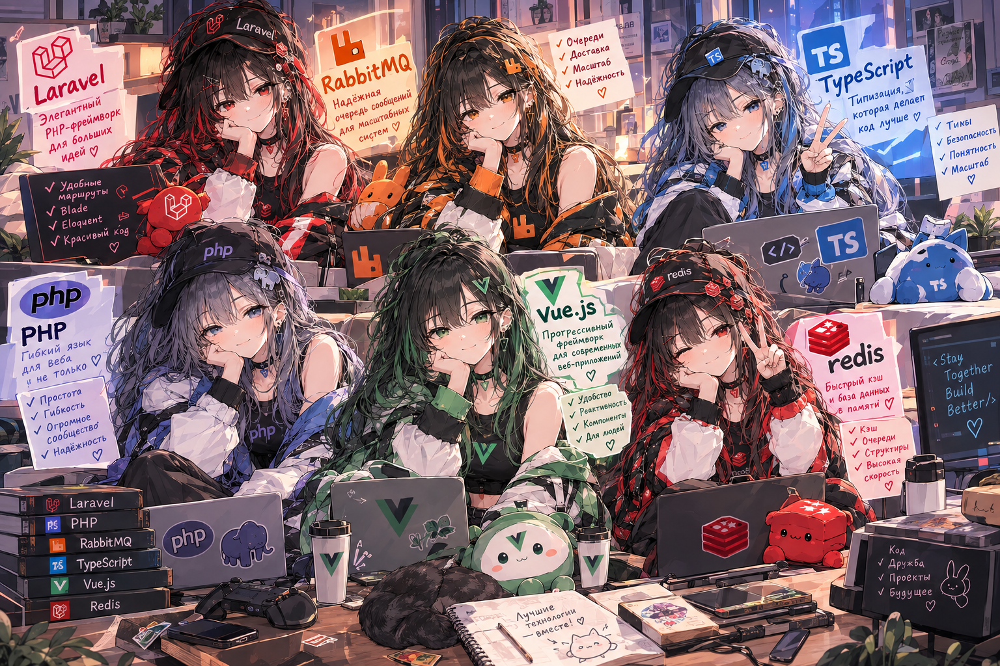
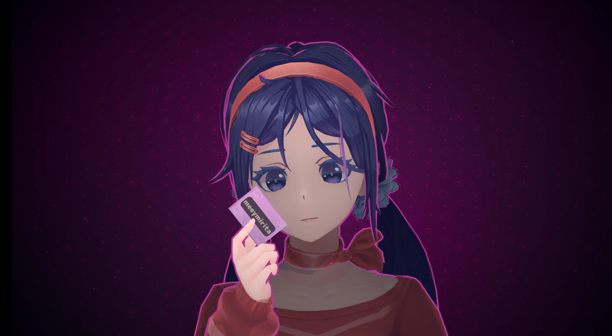

Каждая работа — отдельный git submodule со своей историей коммитов, методичкой и картинкой. Ниже — витрина всех лаб: что внутри, какой стек и куда открыть, чтобы посмотреть.

Нажми на карточку, чтобы открыть методичку или репозиторий

Все лабы веду и прохожу самостоятельно, попутно ведя заметки и методички по каждой теме. Каждая работа — отдельный репозиторий, подключённый сюда как git submodule.
github.com/meeymirita →